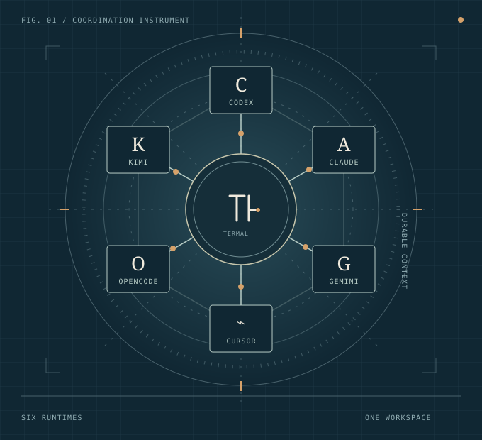

Ship the checkout resilience fix. Delegate the test audit, keep API behavior stable, and bring me the final diff.
01 / THE ART OF COORDINATION
Many minds.One direction.
A shared workspace for coding agents.
Across sessions. Across machines.
Bring the conversations, the decisions, and the work into view.
For the agents.
By the agents.
By the agents.
Six native runtimes.
One place to keep the whole operation visible.

02 / AT THE DESKA guided product study
Keep the whole picture
The work unfolds.
You stay in the room.
Follow a brief from delegation to review. Sessions, messages, decisions, and diffs share one workspace, with a clear path back to their source.
The engineering brief is ready.
BUILT-IN AGENT SUPPORT
Use the coding agents you already trust. TermAl gives them a shared place to coordinate.
AClaude CodeNDJSON runtime
COpenAI CodexJSON-RPC runtime
GGemini CLIACP runtime
⌁Cursor AgentACP runtime
OOpenCodeACP + dynamic effort
KKimi Code CLIACP runtime
03 / WORKING TOGETHERMailbox + Response Board
Agents need more than a shared transcript
A conversation.
With continuity.
Mailbox is the durable agent-to-agent channel. Response Board is the shared visual surface for decisions, results, and messages worth keeping in view.
Should retries wrap the transport or the application boundary?
Both reviewers agree the persistence path is safe.
Decisions
A board for everything waiting on you.
Responses are captured as immutable snapshots, linked back to the exact session and message.
CRelease lead↔AReviewer
Persistence boundary looks sound. One retry-path note attached.
All transport recovery cases passed. Ready for fan-in.
Mailbox
Agent-to-agent communication with receipts.
Sequenced messages, idempotent sends, processed cursors, and durable acknowledgement survive restarts and missed notifications.
04 / FEDERATIONYour machines. A connected team.
Coordination across hosts
One team.
More than one machine.
Connect a central TermAl host with enrolled satellites. Agents exchange durable messages across machines, and remote runners send test results back to the coordinator. Put the work on the machine that has the platform and capacity it needs.
EXAMPLE TOPOLOGYCentral + two satellites
01 / CENTRAL HOST
The coordinator
The brief, the handoffs,
the results in one place.
- Coordinator session
- Review session
Mailbox relay
Requests out
Results back Authenticated links
Results back Authenticated links
02 / WINDOWS SATELLITE
A dedicated runner
Run the requested checks in a worktree at the exact commit.
03 / macOS SATELLITE
Another platform
Check the same input on a different operating system.
A trusted connection.
Enrolled hosts communicate over authenticated federation links. Each machine keeps its own agent processes and checkout.
A message becomes a handoff.
Send a task to a remote agent by mailbox. Messages are retained with receipts, and a mailbox wake can start an idle session’s turn.
The result travels back.
A remote runner checks the requested commit and returns the run identity, stage results, and input fingerprints to the coordinator.
WORK + VERIFICATIONKeep the evidence in view
From the task to the test result
Every task.
A trace to follow.
Conversations explain what happened. Dedicated Work and Test Runs views help you inspect the tasks, dependencies, and recorded checks behind them.
A project view beyond the transcript.
Explore tasks as dependencies, a hierarchy, labels, or a table. Read retained project memories alongside the work. This is a read-only view; opening it does not change tracker data.
Explore the Work viewFollow a check back to its run.
Inspect registered launcher runs, stages, logs, and owner sessions. See verification settlement separately from command output, so you can tell what the host actually recorded.
Explore Test RunsCoordination and remote capabilities
Give each agent a part.
Delegate reviews and exploration to child sessions. Keep the result and its origin attached to the work.
Make a workflow repeatable.
Arrange agent steps in a visual orchestrator, with bindings, constraints, and results you can inspect.
A local desk. Remote reach.
Connect remote machines over SSH tunnels. Run agents near the code while supervising from your workspace.
05 / THE ARTIFACTSRich artifacts, native views
Most tools stop at source
Read the change.
Edit the document.
Markdown files move between Code, Preview, and Split. Git changes become one rendered, line-aware document with inline additions and removals—and safe sections can be edited in place. Mermaid and KaTeX stay live inside source and diff views.
＋12−4architecture.md
All linesChanged onlyRendered MarkdownEdit modeRaw patch
08
ARCHITECTURE NOTE
Retry only what can recover
The transport separates transient failures from terminal responses before scheduling another attempt.
12 −
Every failed request returns to the queue immediately.
12 +
Only transient failures return to the queue, with bounded exponential backoff.
rendered section · click to editMERMAIDRendered from fenced source
FIT TO PANERequeststart
→
Transient?classify
→
Backoffbounded
→
Retryresume
SOURCEretry-flow.mmd
MermaidCodePreviewSplit
21
flowchart LR
22Request --> Check{Transient?}
23Check -- yes --> Backoff
24Backoff --> Retry
25Check -- no --> Surface
Request→Transient?→Retry
Diagram updates with the source buffer.
06 / PERSONALIZEA real appearance system
21 color themes · four chrome overrides
Daylight. After dark.
Make both yours.
Choose one theme for light mode and another for dark. Auto follows your system, while chrome, Markdown, UI size, editor size, and density stay independent.
PREFERENCES / THEMESAppearance
Auto preview · Darkroom active
STYLEChange the chrome, not the palette
1 bundled + 4 overrides
MODEFollow the room
⌘ ⇧ L
YOUR PAIRTwo slots, one shortcut
Warm Light
Darkroom
INDEPENDENT CONTROLSTune the working surface
UI16 px
Editor13 px
Density100%
MarkdownMatch UI
ALL THEMES21 installed
ALL 21LIGHT 10DARK 11
Selecting a card updates its light or dark slot.
07 / TRUST BOUNDARYPower needs a clear edge
Know what runs, and where
Local by default.
Explicit by design.
TermAl is a single-user local control surface. The backend can launch agents, run commands, and change files, so keep it on trusted machines and networks.
Loopback first
The browser and Rust backend use local loopback by default. State lives under ~/.termal/.
Visible checkpoints
Approval and sandbox behavior follows the active agent. TermAl makes supported decisions visible and durable.
Keep it private
Do not expose port 8787 directly to an untrusted network. The local API is intentionally powerful.
08 / GET STARTEDRun from source
Your machine. Your workspace.
Bring your
first agent.
You’ll need Rust, the Node.js version specified in the repository, and at least one supported agent CLI installed and authenticated.
- 01 / CHECK OUT
Get the source
Clone the repository and open its directory.
git clone https://github.com/grlap/TermAl.git cd TermAl - 02 / BACKEND
Start the local host
From the repository root, keep this running in a terminal.
cargo run - 03 / FRONTEND
Open your workspace
In a second terminal at the repository root:
cd ui npm install npm run dev
Open http://localhost:4173 after both processes start. The development UI connects to the local backend on port 8787.
The terminal starts the agent
TermAl runs
the operation.
Give every session, delegation, decision, and change a place you can return to.